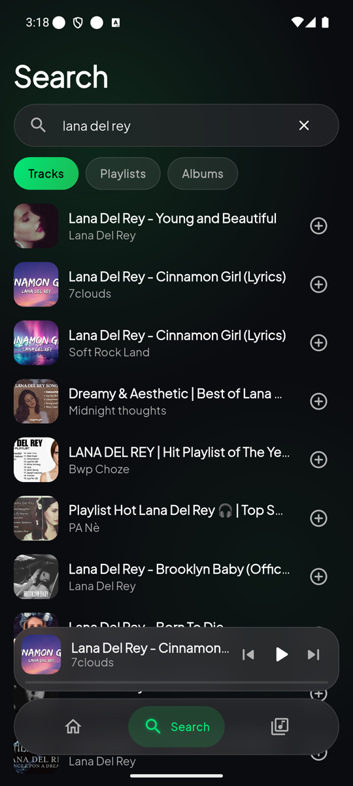
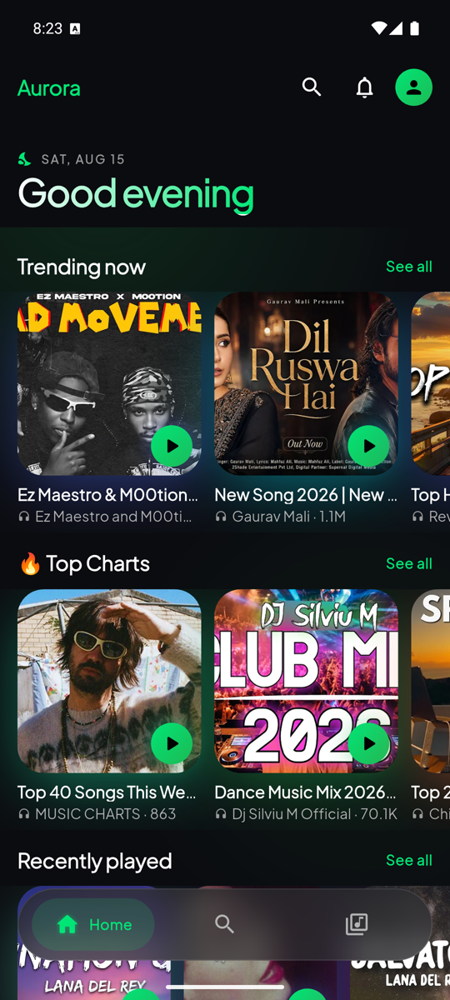
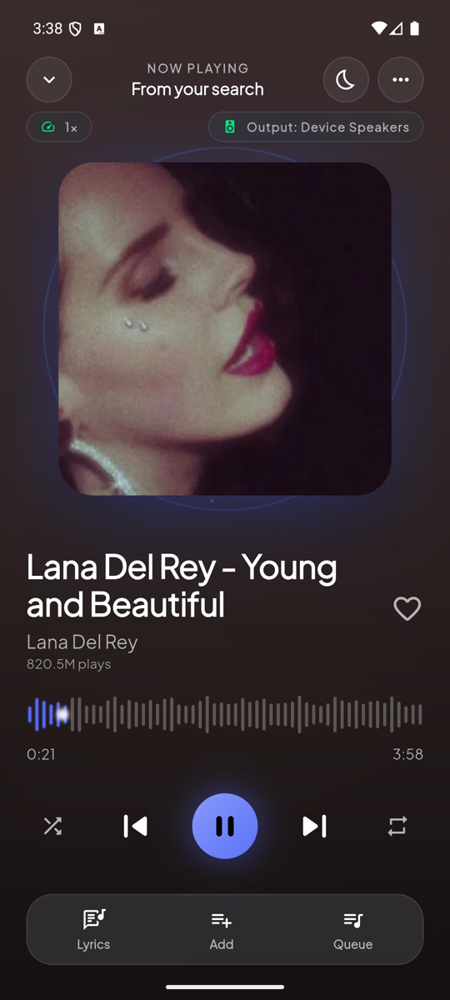
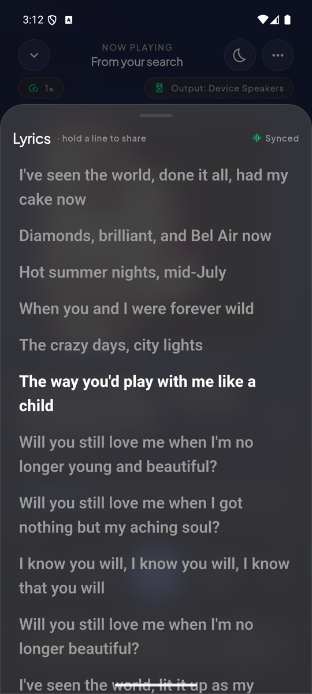
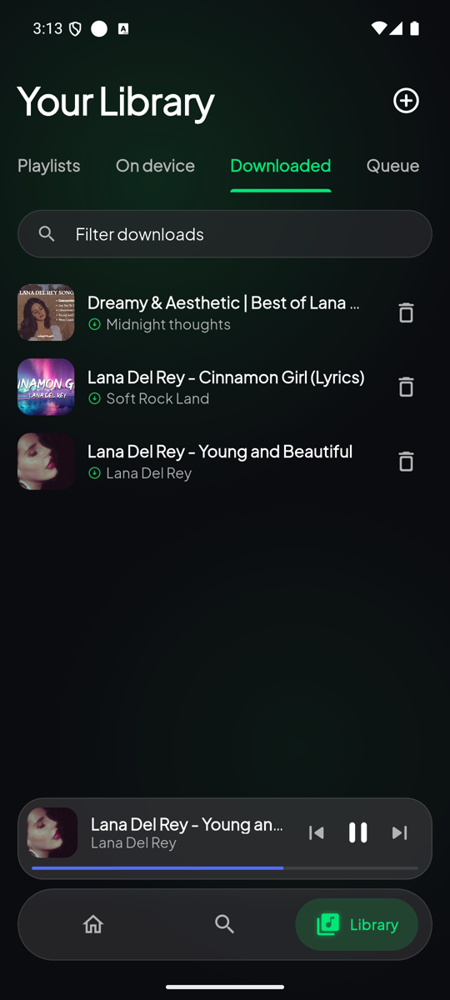

Find it. Play it.
Real search, live suggestions, trending picks, top charts, and recent listening—ready when inspiration strikes.

Built with Flutter
Search and stream with ease, follow every lyric, keep favorites offline, and make your library feel unmistakably personal.
Android 6.0+ · Latest stable release


Everything in tune
A complete music experience, shaped around fluid interaction, useful offline behavior, and the moments between play and pause.
Real search, live suggestions, trending picks, top charts, and recent listening—ready when inspiration strikes.

Time-synced lyrics follow the song. Tap a line to seek or turn a favorite verse into a shareable card.

Download music and lyrics, manage favorites, and keep listening when the network disappears.

Made for the moment
Artwork becomes atmosphere. Aurora builds a readable color system from every cover, then layers responsive glass, subtle motion, and tactile controls around the music.
Inside Aurora
Explore the complete app—from discovery and playback to downloads, playlists, customization, and listening insights. Select any screen for a closer look.
Under the glass
A clean Flutter client pairs with a FastAPI resolver, server-side extraction, range streaming, and an offline-first local library.
Press play
Get the latest Android build, or explore the code and architecture on GitHub.